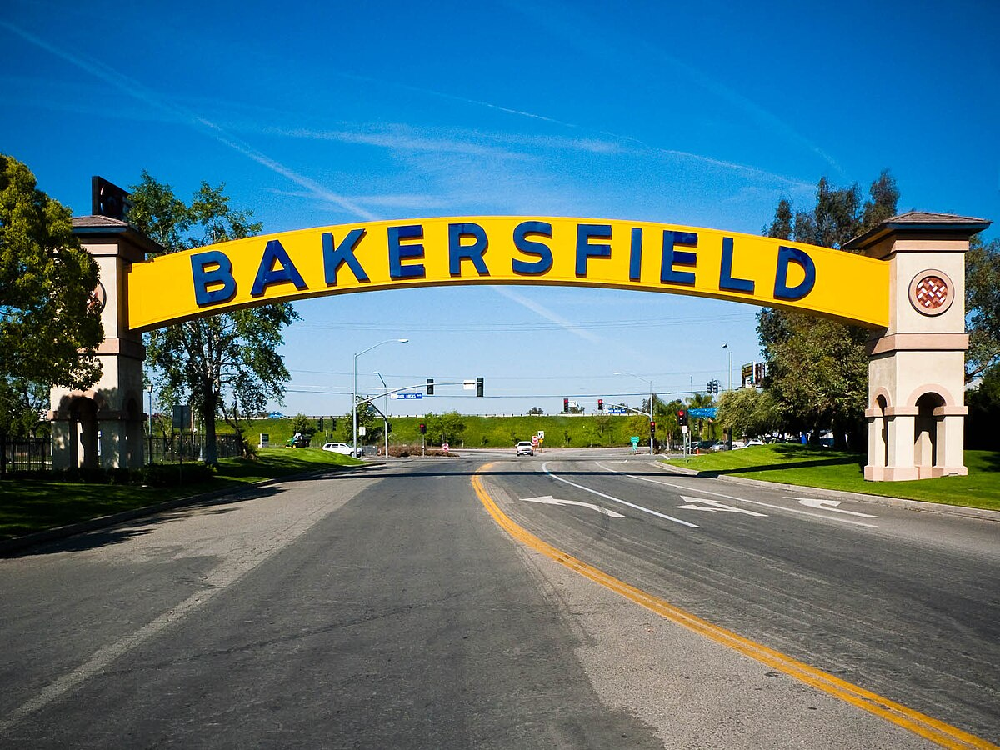

Hello! I am a rising third-year Mechanical Engineering student at the University of California, Los Angeles. I am a first-generation, Latino student deeply passionate about intersections between engineering and education that could serve the immigrant working-class populations of California's Central Valley, where I hail from (Bakersfield, CA). I currently conduct research within the Nanoscale Transport Research Group (NTRG), under the direction of Dr. Timothy Fisher, that examines the elastic and tensile stress behavior of graphite-based carbon-carbon composites generated via methane photothermal decomposition. Additionally, I assist the UCLA Center for the Transformation of Schools as a member of the Operations team that provides administrative services for the Center's many education research projects. Recently, I was accepted into the UC LEADS program, which grants historically underrepresented students within STEM undergraduate programs a pathway into higher education through instructional programming designed to cultivate sucessful practices in oral presenations, paper writing, and experimentation; through this program, and Summer Programs in Undergraduate Research (SPUR), I will conduct research with NTRG for the Summer 2025 season to continue my primary research focus and investigate brand new directions for the project that blend indigenous Mayan weaving practices into the carbon composite manufacturing process.
After undergrad, I plan on pursuing a doctoral program in engineering to facilitate my career goal of becoming a professor/researcher in the field of nuclear fusion, particularly in examining the structural integrity and deformation of various materials within reaction chambers; my previous background in the education sector ignited my passion for the intersection between teaching and engineering, and what it would mean to mentor students with similar backgrounds to my own to hopefully increase STEM retention in the Latine student population.
